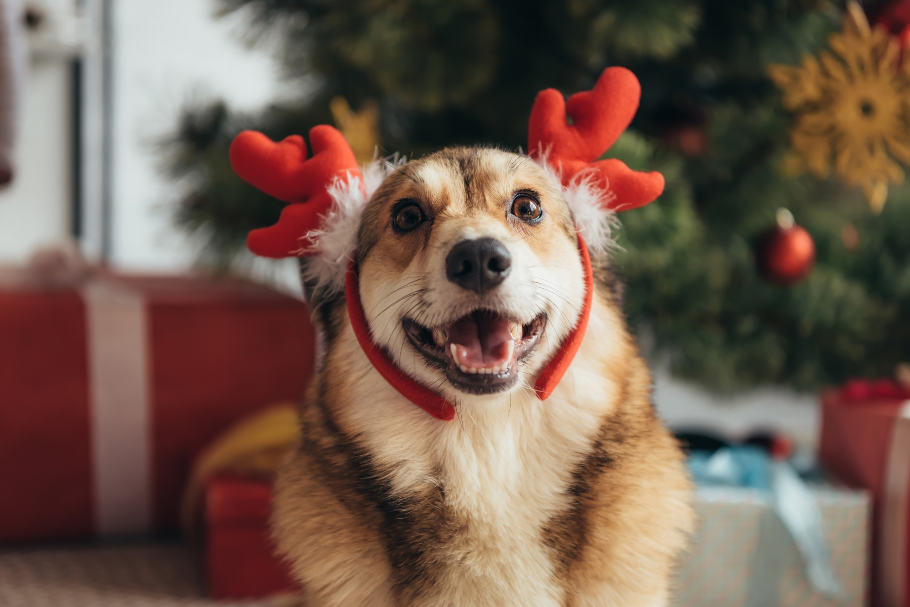
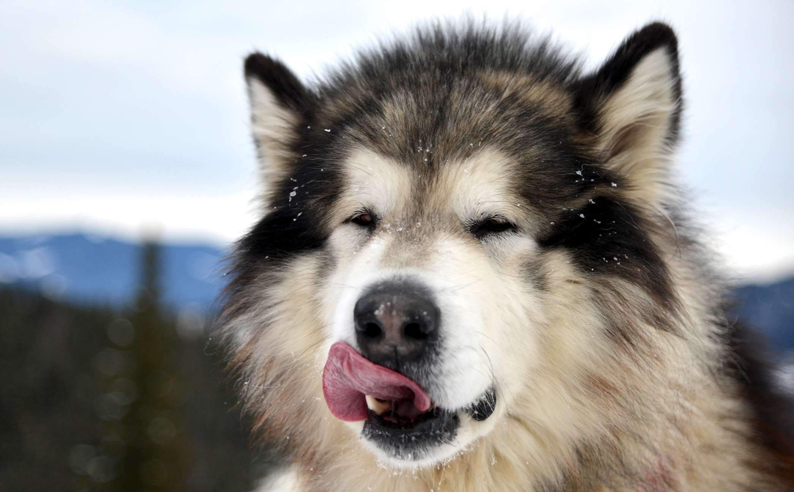
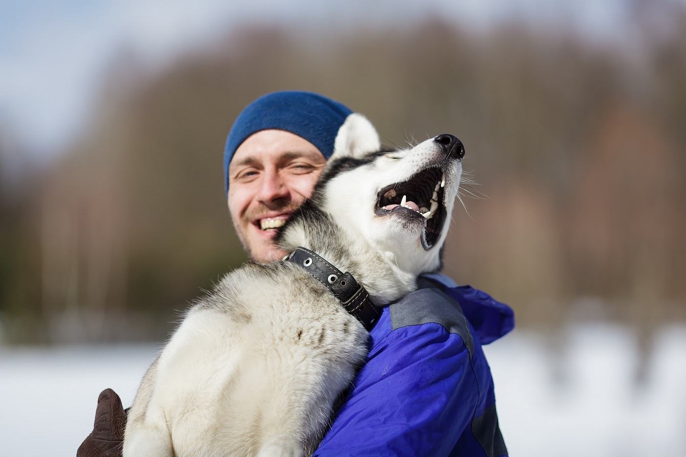

CONTACT US
-
2225 East Bayshore Road, Suite 200
Palo Alto, CA 94303
(877) 738-1838
877-PET1VET
The holiday season sparks a certain feeling inside all of us. There’s something about twinkling lights, and holiday songs that summons childhood memories and fills our hearts with warmth. There are wonderful hot drinks to sip, and heaps of food to savor. All of these things bring us joy. Dogs are very sensitive to our feelings and moods and seeing us happy makes them happy too. Below are a few tips to make sure your dog enjoys holidays as much as you do!

Holiday season may be busy with parties and visits, so remember to allocate time for your dog. Even better - develop a plan for your dog’s holidays. Organize family events so that your dog can be a part of them. Keep up with your dog’s daily exercise and feeding routines, so that they stay in a good mood over Christmas.
Get a gift for your dog, not just for you. There is nothing wrong with getting a Santa hat and a fur-trimmed Christmas sweater so that your puppy would look the cutest. Yes, that would make your Christmas merrier, and the dog will feel it too and will love it. They do love to see us happy. But what they also enjoy are treats and toys.

Give your dog healthy Christmas dinner leftovers. They will feel that this time is special and will appreciate you even more. Of course, try to keep their Christmas dinner as plain and low-fat as possible.

Taking your dog for a walk, especially in the mornings, is a great way to help her achieve relaxed and contented state for the rest of the day. Some training for the sake of mental exercise can also help your dog to be at her best the rest of the day.
Take a walk in the evening too. It’s good for you and for the dog. The exercise is great, even if you walk slowly after a long day of celebration, and most dogs love being outside. If your dog is not used to a walk at that time, it’s a special treat. If she’s used to going out at that time, sticking to this part of her routine is a great kindness to her. Tired dog is a happy dog, but bored dog can be trouble.
(877) 738-1838
877-PET1VET